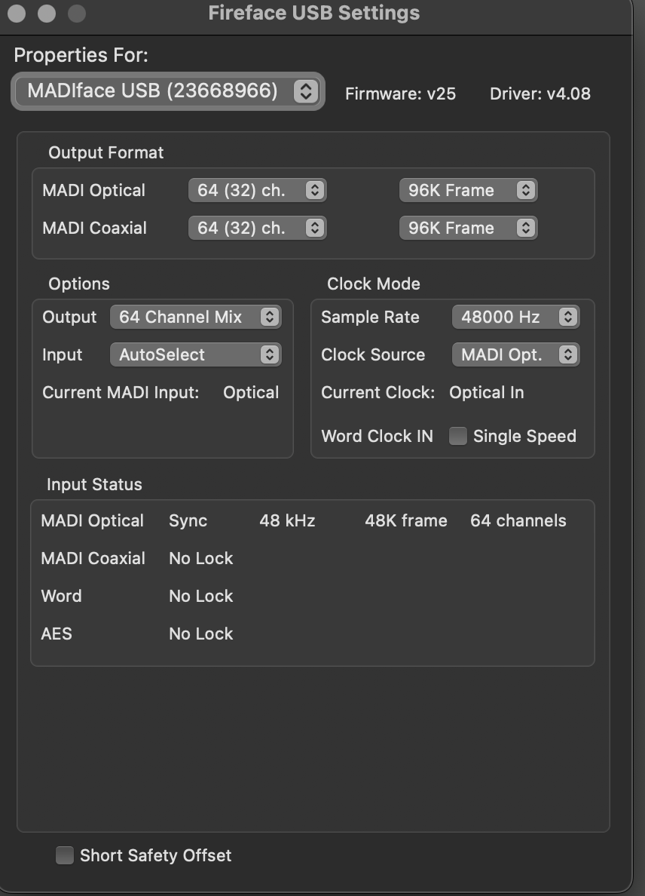
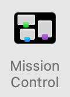
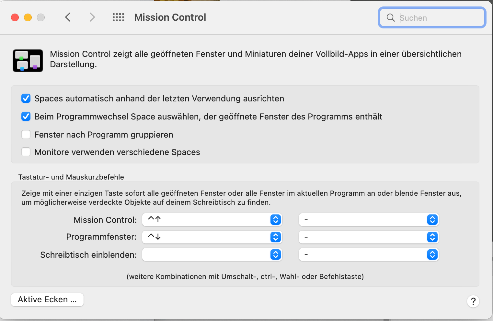

ICST Kompositionsstudio Pre-Installation
Institute for Computer Music and Sound Technology / (ICST) Zurich University of the Arts
Pre-installation for your external laptop
AUDIO
Install RME Driver (DriverKit)
-
Download MadiFace USB and follow the installer’s instructions. Product Page
-
System Compatibility: macOS / Windows
-
USB Series Kernel Extension: macOS 11+
-
Manual: Download PDF
-
Login Items & Extensions for DriverKit

Troubleshooting
-
Watch the Video starting at 2:36 for assistance.
RME MadiFace Sync:

As in the figure above, the synchronization is correct.
RME TotalMixer Setup for Multichannel:

- for Ambisonics delete the ‘stereo-mix’
Video / Screen
Install DisplayLink Manager
Download and install DisplayLink Manager for macOS for your system.
Tip:
To get the curved screen as a single large screen, you need to make an additional setting on your Mac.
- system preferences -> mission control
- deactivate the flag ‘monitors use different spaces.’
- This setting will only become active after a new login!



©2025 ICST